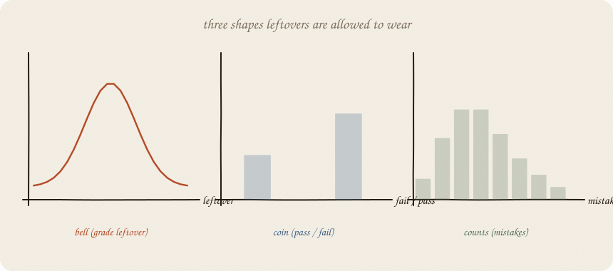
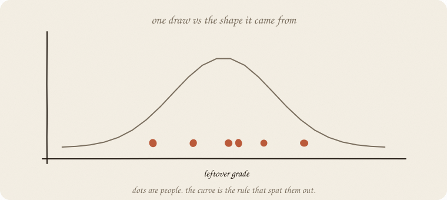
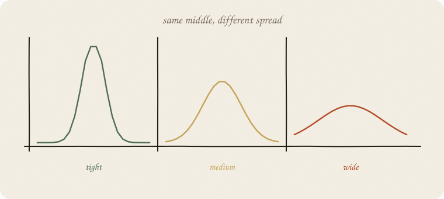

datazines · a sketchbook

Read 01 linear regression and 06 GLM. GLM already picked glasses for y. This notebook names the shapes those glasses assumed — without a 40-curve catalog.
This is 01 of the chance wing. t-tests, CIs, “is this real?” come after. Softmax needs a coin that can have many faces.
Flip it like a notebook. One page = one idea. Done.
Eight grades. Line ŷ = 1.75 + 1 · hours. Leftovers:
+0.25, +0.25, −0.75, +0.25, +0.25, +0.25, −0.75, +0.25
Mean exactly 0 (OLS). Spread about 0.46. They look like a small bell around zero — not a coin, not a count.
A distribution says: if I drew another leftover, where would it like to land? The curve is the rule. The eight numbers are one sample from that rule.

You never see the curve in the wild. You see dots. You guess the costume.
| costume | y looks like | GLM / model you used |
|---|---|---|
| bell (Gaussian) | a number that can sit anywhere, leftovers blob around 0 | ordinary line |
| coin (Bernoulli) | yes / no | logistic |
| counts (Poisson) | 0, 1, 2, 3… never negative | Poisson GLM, mistakes |
That is enough for a first encyclopedia room. The coin’s cousin — a bump on unknown P — is 02 beta. Uniform, exponential, binomial-as-k-out-of-n — sequels when a project needs the door.
The costume has two usual knobs:
For the bell, spread is σ (standard deviation). Tight grades vs wild grades.
For the coin, there is no extra σ. Fatness is already in P: a 50/50 coin rattles most; a 0.95 coin almost always lands yes. Spread = P(1 − P).
For counts, mean and spread travel together (Poisson: variance ≈ mean). A busy week of mistakes is also a wild week.

The line’s b does not know this. Tests later do. The three shapes are the hero drawing — bell, two bars, a pile of 0,1,2,…
Without a costume you can still predict. ŷ does not need a last name.
You need a costume when you ask:
GLM was “pick glasses.” This is “name the light those glasses assume.” The link (06 GLM) is the translation (score → ŷ). The family is this costume. Identity + bell = the grade line. Logit + coin = logistic. Log + counts = Poisson. Wrong costume → ŷ in a nonsense region, and smug leftover.
If you keep only one thing:
distribution = allowed shape of leftover (or of y). bell, coin, counts.
Same eight people. No extra library.
import numpy as np
from sklearn.linear_model import LinearRegression
hours = np.array([1, 2, 2, 3, 4, 5, 5, 6], float)
grade = np.array([3, 4, 3, 5, 6, 7, 6, 8], float)
line = LinearRegression().fit(hours.reshape(-1, 1), grade)
resid = grade - line.predict(hours.reshape(-1, 1))
print("residuals", np.round(resid, 3))
print("mean", round(resid.mean(), 6), "std", round(resid.std(ddof=1), 3))
residuals [ 0.25 0.25 -0.75 0.25 0.25 0.25 -0.75 0.25]
mean 0.0 std 0.463
Mean 0: OLS. Std ~0.46: the bell’s spread, guessed from eight dots. Two leftovers at −0.75 are the fat tails of a tiny sample — not a new costume.
| word | meaning |
|---|---|
| distribution | rule for where a random number likes to land |
| sample | the dots you actually got |
| Gaussian / bell | leftovers of a line |
| Bernoulli / coin | yes / no |
| Poisson / counts | 0, 1, 2, … |
| mean | center |
| std / σ | spread of the bell |
| P(1−P) | spread of the coin (no extra σ) |
Reach for it when you care how y rattles, not only ŷ; before tests; before softmax; when GLM asked “which family?”
Skip it when you only wanted a line and a cheat sheet of b; when someone hands you a zoo of named curves with no y in sight.
Pays you: the chance wing’s 01. Unlocks t-tests, CIs, “legal region” for ŷ. Three costumes cover most of this encyclopedia.
Costs you: the curve is a guess. Eight dots do not prove a bell. Wrong costume → smug uncertainty (GLM’s cost, again).
Chance wing, 01. Coin’s cousin: 02 beta. The first test: 01 t-test. Many-faced coin: 03 softmax. Walking knobs: 01 gradient descent.
Flip it like a notebook. One page = one idea.